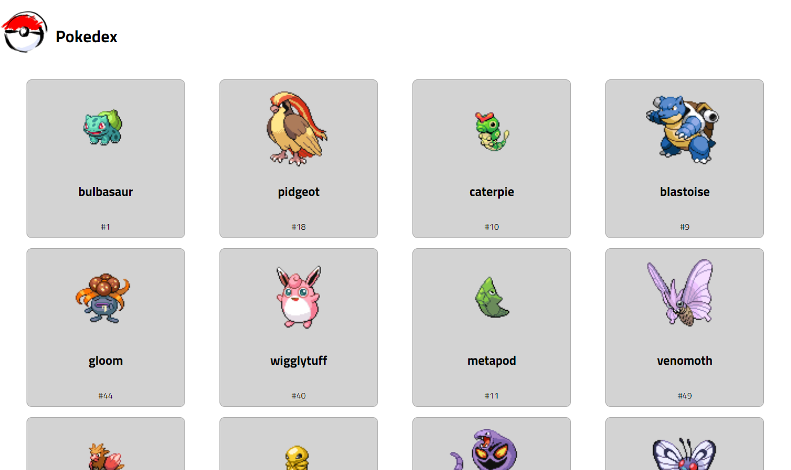
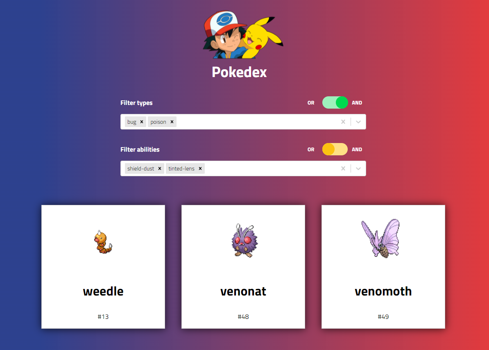

Pokedex - Version 2

This is an updated version of an app I made while studying web development at SAIT. Built with React this time around, this app fetches the first 50 pokemon from the PokeAPI, stores the data in the browser, and displays a card for each pokemon. Styled Components is used for styling, and Axios is used to fetch the data.
Version 1
In my JavaScript class at SAIT we were tasked with creating an app that fetches data from an API and displays the data on the front end. Many of us chose the pokemon API because it is easy to work with and beginner friendly.
The original project was built with vanilla JavaScript, and I made use of the “document.createElement” function all throughout the code to create the pokemon cards. It is helpful of course to create projects in plain JavaScript because it helps you to learn the fundamentals, and how JavaScript works with the DOM.
My original project fetched the data from the API and displayed some of the data on cards.
If you’d like, you can see Version 1 of the app here, and view the code on Github here.
Version 2
Styling
Since I’m experienced with using React, and React is well-suited for card-style layouts, I decided to use it to build Version 2. Being able to control the styling of my components directly in my JavaScript files is very convenient, so I used Styled Components for most of the styling within the app.
It was important for me to make the design more visually interesting than Version 1, which was white and grey except for the pokemon images and felt a bit plain. I had been using gradients a lot at work, so I thought a red and blue gradient in the background would brighten up the app and match well with Pokemon’s branding. The card style is very similar to Version 1, with a more subtle shadow effect on mouse hover. The Ash and Pikachu image in the header ties the colour palette together and gives the app a cartoonish, playful feel.
When the app is first opened and the data is being fetched there are a few seconds of lag, so it was important to have an interesting loading screen. I decided to incorporate a pokeball into the loading component, since I had not used it yet anywhere else in the design, and gave it a bouncing animation.
Storing the data
The introduction of the PokeAPI docs requests that developers cache their data locally once fetched. This way the developer can work on their application and discover how the API works without making too many calls to the API and burdening it.
While building Version 1 of the app I didn’t know how to do this and it wasn’t a requirement of the assignment. Since then my developer skills have improved, so I wanted to respect the API developers’ wishes and attempt caching the data. I knew that I would be refreshing my page often while styling the app and didn’t want to make unnecessary calls to the API.
At first I saved the data to local storage, retrieving my items whenever I needed to display the cards. While researching local storage further I discovered session storage, and decided to update my code to use this instead. The difference between local storage and session storage is that local storage is saved in the client’s browser until they delete it, while session storage is deleted when the tab is closed. I chose to go with session storage because it felt unnecessary for me to store pokemon data on a client’s browser long term, especially if they only viewed the app once or twice.
I sometimes ran into issues with fetching the data. The app makes a call to the API to get data for each pokemon, and fetching from an external source happens asynchronously, even if your code appears to be synchronous. To handle this I made use of JavaScript’s async/await functionality, which I use all the time at work, to ensure the app waits for the data to be returned from the API before moving onto the next line of code. When I didn’t do this, the cards would sometimes display out of order, or not at all, because my display functionality was rendering before the app had all the required data.
Filtering
While I was proud of Version 1 when I built it originally, it is undeniable that it is lacking in functionality. Version 2 needed to be more interactive and informative, so I added the capability to filter pokemon by type and ability.
I started by adding a multi-select dropdown for type; a user would be able to select one or more types of pokemon to display. However, many pokemon have multiple types – for example, if you selected “bug” and “flying” types, would you expect to see all pokemon that are “bug” or “flying”? Or would you want to get only the pokemon that are both “bug” and “flying”? A user could realistically want either of these options.
To address this I added a toggle to both the type and abilities selectors where a user can choose “or” or “and”.
A user can filter pokemon only by types, if they leave the abilities selection empty, and vice versa. One could also find pokemon with specific types and abilities combined.
Conclusion
Creating Version 1 of this project was very challenging for me at the time, as I was still new to web development. Version 2 had its own challenges, particularly with fetching the pokemon data asynchronously, but I was able to leverage my JavaScript experience to solve the problem.
Version 2 is an improvement over Version 1, both in styling and functionality. I had a lot of fun building it and am proud to see the progress I’ve made as a developer.
Pokemon sprites displayed on the cards are from the PokeAPI, and all other images are from Snipstock.